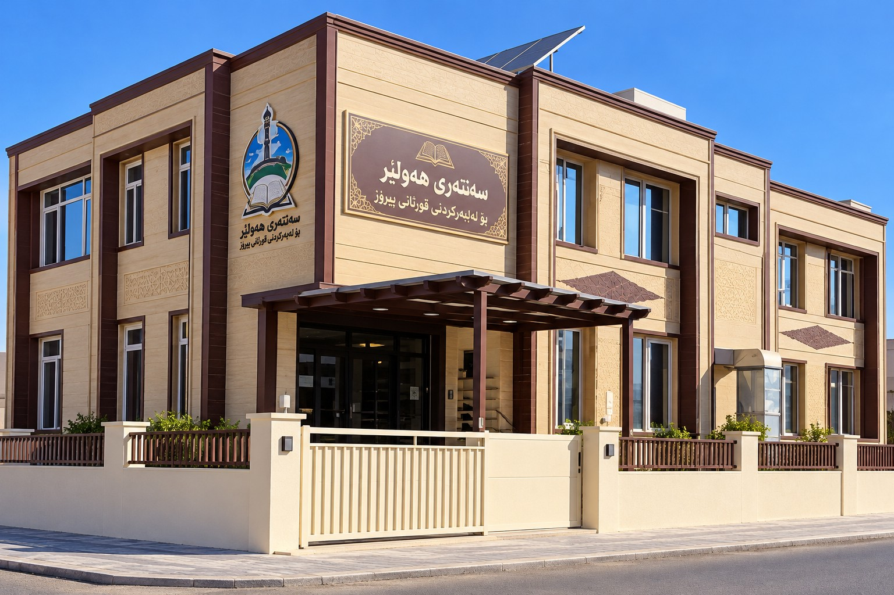

Dentistry
Oral health and a brighter smile.
وَقُل رَّبِّ زِدْنِي عِلْمًا
And say, “My Lord, increase me in knowledge.” — Qur’an 20:114
KNOWLEDGE • FAITH • GROWTH
Guided by Faith. Driven by Knowledge. Inspired by Purpose.
A personal and academic journey of learning, growth, and ambition — rooted in Islamic values and focused on education, personal interests, and future goals.
Oral health and a brighter smile.
Faith and guidance in daily life.
Study, research and growth.
My roots, my identity, my inspiration.
THE PERSON BEHIND THE JOURNEY
Aland
My name is Aland Saman Ismael. I am a Kurdish Muslim, grateful for what Allah has destined for me. I am currently a dental student, and I hope to help others and do good whenever I can.
Through this website, you can get to know me, explore my experiences, and get in touch with me.
“A better Muslim, a skilled dentist, and a useful member of society.”
Knowledge is a trust, and serving people is a form of worship.
FAITH • DISCIPLINE • REFLECTION
Erbil Center for the Memorization of the Holy Quran
I studied at this center for several years. This experience contributed to my relationship with the Qur’an, discipline, learning, reflection, and personal growth.

Developing an interest in Qur’anic learning.
Studying and building discipline.
Appreciating the meaning of the experience.
Carrying these values into everyday life.
These are themes of the journey, not dated historical milestones.
STAY CONNECTED
Feel free to get in touch with me through any of the following platforms.